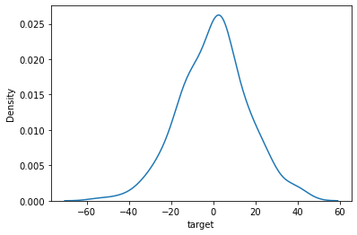
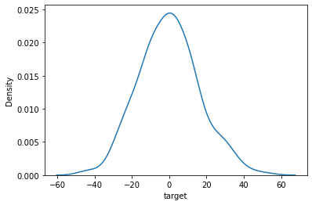

A/B Testing#
import numpy as np
import pandas as pd
from scipy.special import comb
from scipy import stats
import seaborn as sns
Outcomes#
Describe what an A/B Test is:
When it is used
What forms it may take
Conduct an A/B Test in Python using
scipy
A/B Testing is really just a form of hypothesis testing applied to a business problem. And so it can take many forms.
The classic form of A/B Testing is exposing customers to two different versions of a website (the A and B versions) and then conducting a hypothesis test to see if their behavior is significantly different between the two versions.
Even limited to this context, there are many tests one might run!
We’ll try a couple examples of A/B Testing here.
To start we’ll try two examples with fake data:
Example 1: Canadian Winter Temperatures#
a1 = pd.read_csv('fake_data/a1.csv', usecols=['target'])
b1 = pd.read_csv('fake_data/b1.csv', usecols=['target'])
a1.head()
| target | |
|---|---|
| 0 | -12.783261 |
| 1 | -2.142397 |
| 2 | 13.996387 |
| 3 | -9.040035 |
| 4 | 6.837523 |
b1.head()
| target | |
|---|---|
| 0 | 24.304128 |
| 1 | -10.077538 |
| 2 | 19.751174 |
| 3 | -9.126446 |
| 4 | 17.236564 |
Kernel Density Plots#
sns.kdeplot(a1['target']);

sns.kdeplot(b1['target']);

Hypothesis Test#
The data here represent average winter temperatures at various locations in Canada, and the question is whether the temperatures in Group A are lower than temperatures in Group B.
Null hypothesis: The temperatures in Group A are not lower than the temperatures in Group B.
Alternative hypothesis: The temperatures in Group A are lower than the temperatures in Group B.
By Hand#
First let’s try this by hand, assuming a \(t\)-distribution, and setting an \(\alpha\) threshold of 0.02:
We’ll start by calculating the pooled variance:
\(\Large s^2_P=\frac{(n_1-1)s^2_1 - (n_2-1)s^2_2}{n_1+n_2-2}\).
var_pooled = ((len(a1)-1) * a1.var() - (len(b1)-1) * b1.var()) / (len(a1) + len(b1) - 2)
var_pooled
target -3.60768
dtype: float64
Now we calculate the \(t\)-statistic:
\(\Large t=\frac{\bar{x_1} - \bar{x_2}}{s^2_P\sqrt{\frac{1}{n_1} + \frac{1}{n_2}}}\)
t = (a1.mean() - b1.mean()) / (var_pooled * np.sqrt(1/len(a1) + 1/len(b1)))
t
target -0.88395
dtype: float64
And the critical \(t\)-stat is:
stats.t.ppf(0.99, df=len(a1)+len(b1)-2)
2.333859092543348
In One Line!#
stats.ttest_ind(a1, b1, equal_var=False).pvalue
array([0.84415484])
Example 2: Online Sales#
Now let’s try a binomial A/B Test (where the variable of interest is binary). We can use Fisher’s exact test.
Question#
We have data about whether customers completed sales transactions, segregated by the type of ad banners to which the customers were exposed.
The question we want to answer is whether there was any difference in sales “conversions” between desktop customers who saw the sneakers banner and desktop customers who saw the accessories banner in the month of May 2019.
Getting the Data#
First let’s download the data from kaggle.
!pwd
/Users/jamesirving/Documents/GitHub/_COHORT_NOTES/022221FT/Online-DS-FT-022221-Cohort-Notes/Phase_2/topic_16_AB_testing/ds-ab_testing-main
# !unzip /Users/dbraslow/Downloads/archive.zip
# !mkdir data
# !ls
# !mv /Users/dbraslow/Downloads/product.csv data
Let’s go ahead and amend the .gitignore file now so that we don’t accidentally add the data to our next commit.
# !(echo ""; echo "# data"; echo "product.csv") >> .gitignore
df = pd.read_csv('/Users/jamesirving/datasets/product.csv')
df.head()
| order_id | user_id | page_id | product | site_version | time | title | target | |
|---|---|---|---|---|---|---|---|---|
| 0 | cfcd208495d565ef66e7dff9f98764da | c81e728d9d4c2f636f067f89cc14862c | 6f4922f45568161a8cdf4ad2299f6d23 | sneakers | desktop | 2019-01-11 09:24:43 | banner_click | 0 |
| 1 | c4ca4238a0b923820dcc509a6f75849b | eccbc87e4b5ce2fe28308fd9f2a7baf3 | 4e732ced3463d06de0ca9a15b6153677 | sneakers | desktop | 2019-01-09 09:38:51 | banner_show | 0 |
| 2 | c81e728d9d4c2f636f067f89cc14862c | eccbc87e4b5ce2fe28308fd9f2a7baf3 | 5c45a86277b8bf17bff6011be5cfb1b9 | sports_nutrition | desktop | 2019-01-09 09:12:45 | banner_show | 0 |
| 3 | eccbc87e4b5ce2fe28308fd9f2a7baf3 | eccbc87e4b5ce2fe28308fd9f2a7baf3 | fb339ad311d50a229e497085aad219c7 | company | desktop | 2019-01-03 08:58:18 | banner_show | 0 |
| 4 | a87ff679a2f3e71d9181a67b7542122c | eccbc87e4b5ce2fe28308fd9f2a7baf3 | fb339ad311d50a229e497085aad219c7 | company | desktop | 2019-01-03 08:59:15 | banner_click | 0 |
df.info()
<class 'pandas.core.frame.DataFrame'>
RangeIndex: 8471220 entries, 0 to 8471219
Data columns (total 8 columns):
# Column Dtype
--- ------ -----
0 order_id object
1 user_id object
2 page_id object
3 product object
4 site_version object
5 time object
6 title object
7 target int64
dtypes: int64(1), object(7)
memory usage: 517.0+ MB
EDA#
Lets’s look at the different banner types:
df['product'].value_counts()
clothes 1786438
company 1725056
sneakers 1703342
sports_nutrition 1634625
accessories 1621759
Name: product, dtype: int64
df.groupby('product')['target'].value_counts()
product target
accessories 0 1577208
1 44551
clothes 0 1673723
1 112715
company 0 1725056
sneakers 0 1635623
1 67719
sports_nutrition 0 1610888
1 23737
Name: target, dtype: int64
Let’s look at the range of time-stamps on these data:
df['time'].min()
'2019-01-01 00:00:03'
df['time'].max()
'2019-05-31 23:59:58'
Let’s check the counts of the different site_version values:
df['site_version'].value_counts()
mobile 6088335
desktop 2382885
Name: site_version, dtype: int64
df['title'].value_counts()
banner_show 7393314
banner_click 829184
order 248722
Name: title, dtype: int64
df.groupby('title').agg({'target': 'mean'})
| target | |
|---|---|
| title | |
| banner_click | 0 |
| banner_show | 0 |
| order | 1 |
Experimental Setup#
We need to filter by site_version, time, and product:
df_AB = df[(df['site_version'] == 'desktop') &
(df['time'] >= '2019-05-01') &
((df['product'] == 'accessories') | (df['product'] == 'sneakers'))].reset_index(drop = True)
df_AB.tail()
| order_id | user_id | page_id | product | site_version | time | title | target | |
|---|---|---|---|---|---|---|---|---|
| 218783 | f549b8a88b84d5b6813bb98c03b3270a | f57ab001ccae51094cdbf91e6a7a1db8 | 07403df14c267a77b7df508eed9e651c | sneakers | desktop | 2019-05-23 10:22:00 | banner_show | 0 |
| 218784 | 566828e3ea907d4966d4965b28265986 | 5df0d1240a575396e75223a589e44295 | f2dff4a4f409d399398e583da973983f | accessories | desktop | 2019-05-24 06:49:26 | banner_show | 0 |
| 218785 | f37363d980d062d9ccdfd58f793a36c8 | fd645f04aa9c16781d2173bcf38592dd | f10503fd6aa0473bad30f78150035a75 | sneakers | desktop | 2019-05-29 17:17:27 | banner_show | 0 |
| 218786 | 982c47ce571d715bd1e5ebcb185500f9 | d73ee197a864f988f7edf1cc284c44c3 | 01f91b0ef0f8b9807232eb4e5a02babb | accessories | desktop | 2019-05-27 18:50:51 | banner_show | 0 |
| 218787 | 70c275428b8d53eef294d0529253b694 | 59e736f90b5f8003072bf0eb271ddb86 | 7bc3a33568d00773d5b58d6c7348bf3e | accessories | desktop | 2019-05-23 14:07:00 | banner_show | 0 |
The Hypotheses#
NULL: Customers who saw the sneakers banner were no more or less likely to buy than customers who saw the accessories banner.
ALTERNATIVE: Customers who saw the sneakers banner were more or less likely to buy than customers who saw the accessories banner.
Setting a Threshold#
We’ll set a false-positive rate of \(\alpha = 0.05\).
Preparing Fisher’s Test#
Fisher’s Test is an exact calculation of a \(p\)-value that requires four quantities: the respective numbers of 1’s and 0’s for each class.
df_A = df_AB[df_AB['product'] == 'accessories']
df_B = df_AB[df_AB['product'] == 'sneakers']
We calculate values in a 2x2 table: the numbers of people who did or did not submit orders, both for the accessories banner and thesneakers banner.
accessories_orders = sum(df_A['target'])
sneakers_orders = sum(df_B['target'])
accessories_orders, sneakers_orders
(4649, 6868)
To get the numbers of people who didn’t submit orders, we get the total number of people who were shown banners and then subtract the numbers of people who did make orders.
accessories_total = sum(df_A['title'] == 'banner_show')
sneakers_total = sum(df_B['title'] == 'banner_show')
accessories_no_orders = accessories_total - accessories_orders
sneakers_no_orders = sneakers_total - sneakers_orders
accessories_no_orders, sneakers_no_orders
(93562, 92492)
Calculation#
Fisher’s Test tells us that the \(p\)-value corresponding to our distribution is given by:
\(\Large p = \frac{(a+b)!(c+d)!(a+c)!(b+d)!}{a!b!c!d!n!}\)
a = accessories_orders
b = sneakers_orders
c = accessories_no_orders
d = sneakers_no_orders
ab_choose_a = comb(a+b, a, exact=True)
cd_choose_c = comb(c+d, c, exact=True)
n_choose_ac = comb(a+b+c+d, a+c, exact=True)
p = ab_choose_a * cd_choose_c / n_choose_ac
p
3.849329970961971e-96
Comparing with stats.fisher_exact():
stats.fisher_exact(np.array([[a, b], [c, d]]))
(0.6691661029944147, 2.2151768161436975e-95)
This extremely low \(p\)-value suggests that these two groups are genuinely performing differently. In particular, the desktop customers who saw the sneakers banner in May 2019 bought at a higher rate than the desktop customers who saw the accessories banner in May 2019.
Exercise#
Same question as before, but this time for April 2019 instead of May! Use a threshold of 0.05.